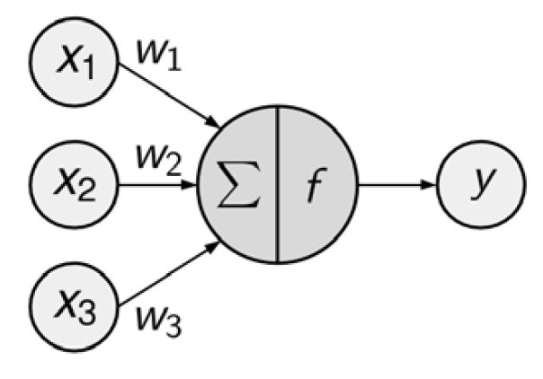

13. Redes Neuronales#
A este tipo de algorimos se les suele llamar de caja negra. La caja negra se debe a que los modelos subyacentes se basan en sistemas matemáticos complejos y los resultados son difíciles de interpretar.
Aunque puede no ser factible interpretar los modelos de caja negra, es peligroso aplicar los métodos a ciegas.
13.1. Entendiendo una red neuronal#
Una Red Neural Artificial (ANN) modela la relación entre un conjunto de señales de entrada y una señal de salida.
ANN usa una red de neuronas o nodos artificiales para resolver problemas de aprendizaje.
En términos generales, las RNA (ANN) son aprendices versátiles que se pueden aplicar a casi cualquier tarea de aprendizaje: clasificación, predicción numérica e incluso reconocimiento de patrones no supervisados.
Las RNA se aplican mejor a problemas donde los datos de entrada y los datos de salida son bien entendidos o al menos bastante simples, sin embargo, el proceso que relaciona la entrada con la salida es extremadamente complejo. Como método de caja negra, funcionan bien para este tipo de problemas de caja negra.
El diagrama de red dirigida define una relación entre las señales de entrada recibidas por los nodos (variables \(x\)) y la señal de salida (variable \(y\)).
{kind=link}
La señal de cada nodo se pondera (valores \(w\)) según su importancia; ignore por ahora cómo se determinan estos pesos. Las señales de entrada son sumadas por el cuerpo de la célula y la señal se transmite de acuerdo con una función de activación indicada por \(f\).
Una neurona artificial típica con \(n\) nodos de entrada puede representarse mediante la siguiente fórmula. Los pesos \(w\) permiten que cada una de las \(n\) entradas, (\(x\)), contribuya una cantidad mayor o menor a la suma de las señales de entrada. El total neto es utilizado por la función de activación \(f(x)\), y la señal resultante, \(y(x)\), es la salida.
Aunque existen numerosas variantes de redes neuronales, cada una se puede definir en términos de las siguientes características:
Una función de activación, que transforma la señal de entrada neta de una neurona en una sola señal de salida para ser transmitida en la red
{kind=link}
Una topología de red (o arquitectura), que describe el número de neuronas en el modelo, así como el número de capas y la forma en que están conectadas.
{kind=link}
El algoritmo de entrenamiento que especifica cómo se establecen los pesos de conexión para activar las neuronas en proporción a la señal de entrada.
Fortalezas |
Debilidades |
|---|---|
Se puede adaptar a problemas de clasificación o predicción numérica |
Reputación de ser computacionalmente intensivo y lento de entrenar, particularmente si la topología de red es compleja |
Entre los enfoques de modelado más precisos |
Datos de entrenamiento fáciles de sobreestimar o no subestmiar |
Hace pocas suposiciones sobre las relaciones subyacentes de los datos |
Resultados en un modelo complejo de caja negra que es difícil, si no imposible, de interpretar |
Veamos un ejemplo de cómo funciona una red neuronal:
13.1.1. Batch & Epoch#
Ejemplo
Supongamos que tienes un conjunto de datos con 200 muestras (filas de datos) y eliges un tamaño de lote (Batch) de 5 y 1000 épocas (Epochs).
Esto significa que el conjunto de datos se dividirá en 40 lotes, cada uno con cinco muestras. Los pesos del modelo se actualizarán después de cada lote de cinco muestras.
Esto también significa que una época implicará 40 lotes o 40 actualizaciones del modelo.
Con 1000 épocas, el modelo estará expuesto o pasará por todo el conjunto de datos 1000 veces. Eso es un total de 40 000 lotes durante todo el proceso de entrenamiento.
Conceptos
El tamaño del lote es la cantidad de muestras (filas del dataset) procesadas antes de que se actualice el modelo.
La cantidad de épocas es la cantidad de pasadas completas a través del conjunto de datos de entrenamiento.
El tamaño de un lote debe ser mayor o igual a uno y menor o igual a la cantidad de muestras en el conjunto de datos de entrenamiento.
Ambos son valores enteros y son hiperparámetros para el algoritmo de aprendizaje, es decir, parámetros para el proceso de aprendizaje, no parámetros del modelo interno encontrados por el proceso de aprendizaje.
Debe especificar el tamaño del lote y la cantidad de épocas para un algoritmo de aprendizaje.
No existen reglas mágicas sobre cómo configurar estos parámetros. Debe probar diferentes valores y ver cuál funciona mejor para su problema.
13.1.2. Curva de aprendizaje#
La cantidad de veces que se actualizan los pesos durante el entrenamiento se denomina tamaño de paso o tasa de aprendizaje.
La tasa de aprendizaje es un hiperparámetro configurable que se utiliza en el entrenamiento de redes neuronales y que tiene un valor positivo pequeño, a menudo en el rango entre 0.0 y 1.0.
La tasa de aprendizaje controla la rapidez con la que el modelo se adapta al problema. Las tasas de aprendizaje más pequeñas requieren más épocas de entrenamiento debido a los cambios más pequeños que se realizan en los pesos en cada actualización, mientras que las tasas de aprendizaje más altas dan como resultado cambios rápidos y requieren menos épocas de entrenamiento.
Una tasa de aprendizaje demasiado grande puede hacer que el modelo converja demasiado rápido a una solución subóptima, mientras que una tasa de aprendizaje demasiado pequeña puede hacer que el proceso se bloquee.
El desafío de entrenar redes neuronales de aprendizaje profundo implica seleccionar cuidadosamente la tasa de aprendizaje. Puede ser el hiperparámetro más importante para el modelo.
La actualización de pesos se da en el marco del algoritmo de optimización de gradiente descendente.
Una vez que se calculan los errores para cada neurona de la red mediante el método de retropropagación (backpropagation), se pueden utilizar los errores para actualizar los pesos.
Los pesos de la red se actualizan de la siguiente manera:
weight = weight - learning_rate * error * input
Donde weight es un peso determinado, learning_rate es un parámetro que debe especificar, error es el error calculado por el procedimiento de retropropagación para la neuronae input es el valor de entrada que provocó el error.
Una lista de videos (la mejor que he encontrado) donde se explican redes neuronales:
Datos
from sklearn.datasets import make_classification, make_blobs
# Conjunto de datos no separable
X_D2, y_D2 = make_blobs(n_samples = 100, n_features = 2, centers = 8,
cluster_std = 1.3, random_state = 4)
13.2. Funciones de activación#
import numpy as np
import matplotlib.pyplot as plt
xrange = np.linspace(-2, 2, 200)
plt.figure(figsize=(7,6))
plt.plot(xrange, np.maximum(xrange, 0), label = 'relu')
plt.plot(xrange, np.tanh(xrange), label = 'tanh')
plt.plot(xrange, 1 / (1 + np.exp(-xrange)), label = 'logistic')
plt.legend()
plt.title('Funciones de activación para redes neuronales')
plt.xlabel('Input(x)')
plt.ylabel('Output: función de activación')
plt.show()
13.3. Una capa oculta#
from sklearn.neural_network import MLPClassifier
from shared_utilities import plot_class_regions_for_classifier_subplot
from sklearn.model_selection import train_test_split
X_train, X_test, y_train, y_test = train_test_split(X_D2, y_D2, random_state=0)
fig, subaxes = plt.subplots(3, 1, figsize=(6,18))
for units, axis in zip([1, 10, 100], subaxes):
nnclf = MLPClassifier(hidden_layer_sizes = [units], solver='lbfgs',
random_state = 0).fit(X_train, y_train)
title = 'Dataset 1: Red neuronal, 1 layer, {} nodo'.format(units)
plot_class_regions_for_classifier_subplot(nnclf, X_train, y_train,
X_test, y_test, title, axis)
plt.tight_layout()
/Users/victormorales/opt/anaconda3/lib/python3.9/site-packages/sklearn/neural_network/_multilayer_perceptron.py:546: ConvergenceWarning: lbfgs failed to converge (status=1):
STOP: TOTAL NO. of ITERATIONS REACHED LIMIT.
Increase the number of iterations (max_iter) or scale the data as shown in:
https://scikit-learn.org/stable/modules/preprocessing.html
self.n_iter_ = _check_optimize_result("lbfgs", opt_res, self.max_iter)
/Users/victormorales/opt/anaconda3/lib/python3.9/site-packages/sklearn/neural_network/_multilayer_perceptron.py:546: ConvergenceWarning: lbfgs failed to converge (status=1):
STOP: TOTAL NO. of ITERATIONS REACHED LIMIT.
Increase the number of iterations (max_iter) or scale the data as shown in:
https://scikit-learn.org/stable/modules/preprocessing.html
self.n_iter_ = _check_optimize_result("lbfgs", opt_res, self.max_iter)
/Users/victormorales/opt/anaconda3/lib/python3.9/site-packages/sklearn/neural_network/_multilayer_perceptron.py:546: ConvergenceWarning: lbfgs failed to converge (status=1):
STOP: TOTAL NO. of ITERATIONS REACHED LIMIT.
Increase the number of iterations (max_iter) or scale the data as shown in:
https://scikit-learn.org/stable/modules/preprocessing.html
self.n_iter_ = _check_optimize_result("lbfgs", opt_res, self.max_iter)
13.4. Dos capas ocultas#
from shared_utilities import plot_class_regions_for_classifier
X_train, X_test, y_train, y_test = train_test_split(X_D2, y_D2, random_state=0)
nnclf = MLPClassifier(hidden_layer_sizes = [10, 10], solver='lbfgs',
random_state = 0).fit(X_train, y_train)
plot_class_regions_for_classifier(nnclf, X_train, y_train, X_test, y_test,
'Dataset 1: Red neuronal, 2 layers, 10/10 nodos')
13.4.1. Parámetro de regularización: alpha#
X_train, X_test, y_train, y_test = train_test_split(X_D2, y_D2, random_state=0)
fig, subaxes = plt.subplots(4, 1, figsize=(6, 23))
for this_alpha, axis in zip([0.01, 0.1, 1.0, 5.0], subaxes):
nnclf = MLPClassifier(solver='lbfgs', activation = 'tanh',
alpha = this_alpha,
hidden_layer_sizes = [100, 100],
random_state = 0).fit(X_train, y_train)
title = 'Dataset 2: NN classifier, alpha = {:.3f} '.format(this_alpha)
plot_class_regions_for_classifier_subplot(nnclf, X_train, y_train,
X_test, y_test, title, axis)
plt.tight_layout()
/Users/victormorales/opt/anaconda3/lib/python3.9/site-packages/sklearn/neural_network/_multilayer_perceptron.py:546: ConvergenceWarning: lbfgs failed to converge (status=1):
STOP: TOTAL NO. of ITERATIONS REACHED LIMIT.
Increase the number of iterations (max_iter) or scale the data as shown in:
https://scikit-learn.org/stable/modules/preprocessing.html
self.n_iter_ = _check_optimize_result("lbfgs", opt_res, self.max_iter)
/Users/victormorales/opt/anaconda3/lib/python3.9/site-packages/sklearn/neural_network/_multilayer_perceptron.py:546: ConvergenceWarning: lbfgs failed to converge (status=1):
STOP: TOTAL NO. of ITERATIONS REACHED LIMIT.
Increase the number of iterations (max_iter) or scale the data as shown in:
https://scikit-learn.org/stable/modules/preprocessing.html
self.n_iter_ = _check_optimize_result("lbfgs", opt_res, self.max_iter)
/Users/victormorales/opt/anaconda3/lib/python3.9/site-packages/sklearn/neural_network/_multilayer_perceptron.py:546: ConvergenceWarning: lbfgs failed to converge (status=1):
STOP: TOTAL NO. of ITERATIONS REACHED LIMIT.
Increase the number of iterations (max_iter) or scale the data as shown in:
https://scikit-learn.org/stable/modules/preprocessing.html
self.n_iter_ = _check_optimize_result("lbfgs", opt_res, self.max_iter)
/Users/victormorales/opt/anaconda3/lib/python3.9/site-packages/sklearn/neural_network/_multilayer_perceptron.py:546: ConvergenceWarning: lbfgs failed to converge (status=1):
STOP: TOTAL NO. of ITERATIONS REACHED LIMIT.
Increase the number of iterations (max_iter) or scale the data as shown in:
https://scikit-learn.org/stable/modules/preprocessing.html
self.n_iter_ = _check_optimize_result("lbfgs", opt_res, self.max_iter)
13.5. Aplicación#
La documentación de MLPClassifier está en https://scikit-learn.org/stable/modules/generated/sklearn.neural_network.MLPClassifier.html
from sklearn.datasets import load_breast_cancer
# Breast cancer dataset para clasificación
cancer = load_breast_cancer()
(X_cancer, y_cancer) = load_breast_cancer(return_X_y = True)
from sklearn.neural_network import MLPClassifier
from sklearn.preprocessing import MinMaxScaler
scaler = MinMaxScaler()
X_train, X_test, y_train, y_test = train_test_split(X_cancer, y_cancer, random_state = 0)
X_train_scaled = scaler.fit_transform(X_train)
X_test_scaled = scaler.transform(X_test)
clf = MLPClassifier(hidden_layer_sizes = [100, 100], alpha = 5.0,
random_state = 0, solver='lbfgs').fit(X_train_scaled, y_train)
print('Datos de cáncer de mama')
print('Precisión de NN en los datos de entrenamiento: {:.2f}'
.format(clf.score(X_train_scaled, y_train)))
print('Precisión de NN en los datos de prueba: {:.2f}'
.format(clf.score(X_test_scaled, y_test)))
Datos de cáncer de mama
Precisión de NN en los datos de entrenamiento: 0.98
Precisión de NN en los datos de prueba: 0.97
hidden_layer_sizes = [100, 100]indica que tenemos dos capas ocultas cada una con 100 nodos.alpha = 5.0indica el parámetro de regularización.random_state = 0permite reproducibilidad.solver='lbfgs'es un optimizador de la familia de métodos cuasi-Newton (algoritmo de Broyden–Fletcher–Goldfarb–Shanno).